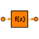

| n_num | INTEGER | 0 | Order of numerator polinomial | - |
| n_den | INTEGER | 1 | Order of denominator polinomial | - |
| s_in | PORTS_LIB.analog_signal | (n = n) | IN | Inlet signal | |
| s_out | PORTS_LIB.analog_signal | (n = n) | OUT | Outlet signal |
| dt | REAL | 0.1 | Sample time | s | |
| option | ENUM InitOption | InitialStates | Initialization of discrete component: states or output | ||
| pdata[n_num + 1] | REAL | 1 | Coefficients of numerator polinomial in descending power of z: p[1]*z^n+...+p[n+1] | ||
| qdata[n_den + 1] | REAL | 1 | Coefficients of denominator polinomial in descending power of z: q[1]*z^n+...+q[n+1] | ||
| x_o[n_den] | REAL | 0 | Initial conditions of the states | ||
| y_o | REAL | 0 | Initial condition for the output |
| n | 1 |
| j | INTEGER | Auxiliary index | |||
| sample | BOOLEAN | FALSE | |||
| u[n] | REAL | Output signals | |||
| x[n_den + 1] | REAL | Values of states |
Document generated automatically (Date: 2019:01:23, Time: 00:18:46)